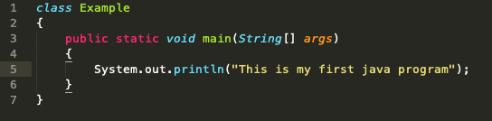
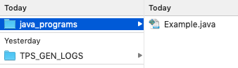
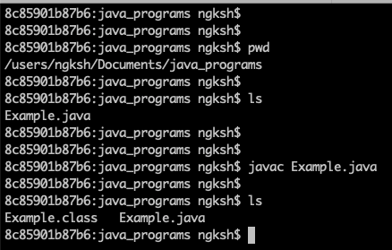
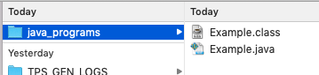

The java compiler creates files with .class extension with names same as the names of the classes present in the java source file.
Java source code:-

File saved as Example.java

Compilation

Generation of class file
